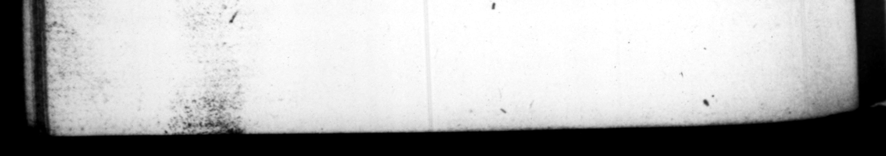

tting: an end to his life. 67. Poſtremo ſemetipſe pertæſus talis epiſtolæ principio, tantum non ſummam ma lorum ſnorum profeſſus eſt, Quid ſcribam rwohis Ps. tres Conſcripti, aut quomodo ſcribam, aut quid omnino non - feribam, hoc tempore, Dis me, Deeque pejus perdant, quam ſui perire ſentio, ſi ſcio. Exiſtimant quidam, præſciſſe hæc eum petitia futurorum: 2c multo ante quanta ſe quandoque acerbitas & infamia maneret, proſpexiſſe. Ileoque Nt imperium inierit & PA. TRIS PATRIZ appellationem, & ne in acta ſua juraretum obſtinatiſſime recuſaſſe: ne mox majore dedecore imPar tantis honoribns inveniretur. Quod ſane & ex oraTone ejus quam de utraque re habuit colligi poteſt: vel eum ait, Similem ſe ſemper ſui futurum : nec unquam mutaturum mores ſuos, quamdiu mentis ſane fu ſſet: ſed exemli cauſa cavendum, ne ſe ſenatus in acta cujuſquam obliYaret, qui aliquo caſu mutari Pofſet. Er rarins : Si quando autem, inquit, de moribus meis, devotogue vobis anima dubita verity : quod prius quam eveniat, opto ut me ſupremus dies huic mutatæ weſire de me opinions eripiat, nihil honoris 4d jiciet mihi PATRIS appellatio vobis autem exprobrabit, aut temeritatem delati mihi ejus eg nomi nis, aut inconſtantiam contrarii de me judiciſi xaſhneſs in conferring it upon opinion of me. 68 Corpore fuit amplo atgue wbuſto: ſtatura quæ juſtam excederet. Latus ab T. TRANG. indeed a when be ſays, ſaid, and publiſh it him i me tte, from Artabames king of the Panthiay wphraiding i 67. At laſt being quite weary of || himſelf, be ſigniſied the extremity of his miſery, in a letter to the ſenate, which begun thus. What to write ig you, venerable fathers, or how to write, or what to write at this time, may all che deities pour upon my head, a more terrible vengeance, than that I perceive. myldf daily to be ſinking under, if I can tell. Some are of opinion that he had a fore knowledge of theſe things, from Ins Skill in future event:; and 1 he ſaw long before the miſery and infamy, that would at laſt come upm him; and for that reaſon, at the be. . nf his reign, bad abſolutely refuſed the title of father of his coun» try, and the preps the ſenate ts ſwear to bis acts, leſt he afterwards, to his greater ſhane, be found unequal to ſuch mighty bonour, ESE the ſpeeches he made wpon occa Ley That he - ſhould ever be the tame, and ſhould never change his manners, ſo long as he kept his wits, but to avoid giving an ill precedent to poſterity, the ſenate ought to have à care of eng · ging themſelves, to mantain the 28. of any one, that might by ſome ill accident or other he influenc'd to alter his conduct. And again, If you ſhould at any time entertain a fe. louſy of my conduct and entire af. fection for you, which Heaven prevent Ly putting a period to my days, rather than I ſhould live to ſee ſuch an alteration in your opinion of me, the title of father will add notning of honour to me, but be a eproach to yon, for your me, or iuconſtancy in altering your 68. He was in his perſon large and robuſt, of a flature ſomewhat above the uſual ſize : road ſhoulzered and chef humeris
